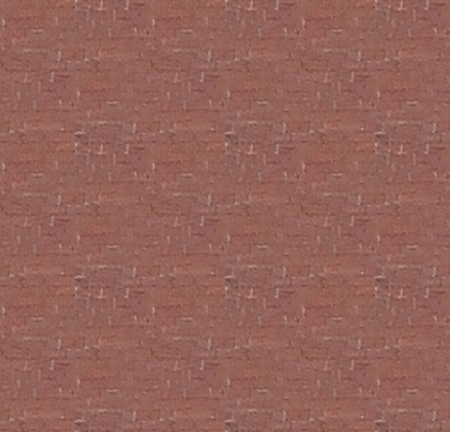
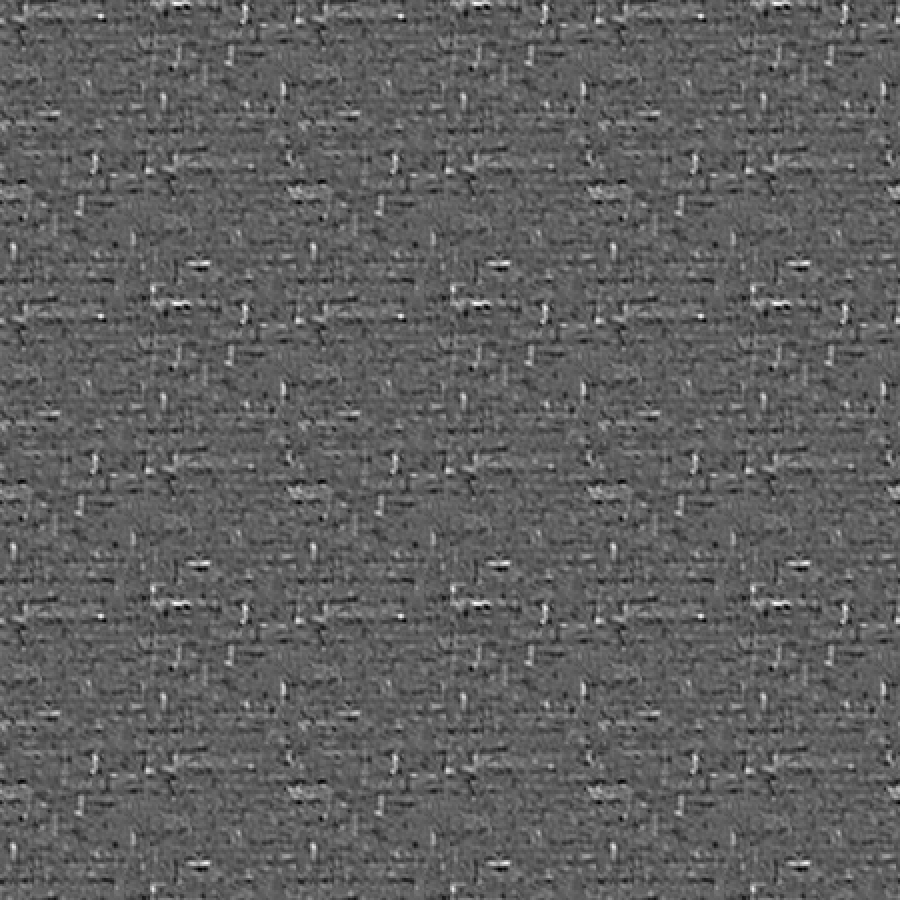
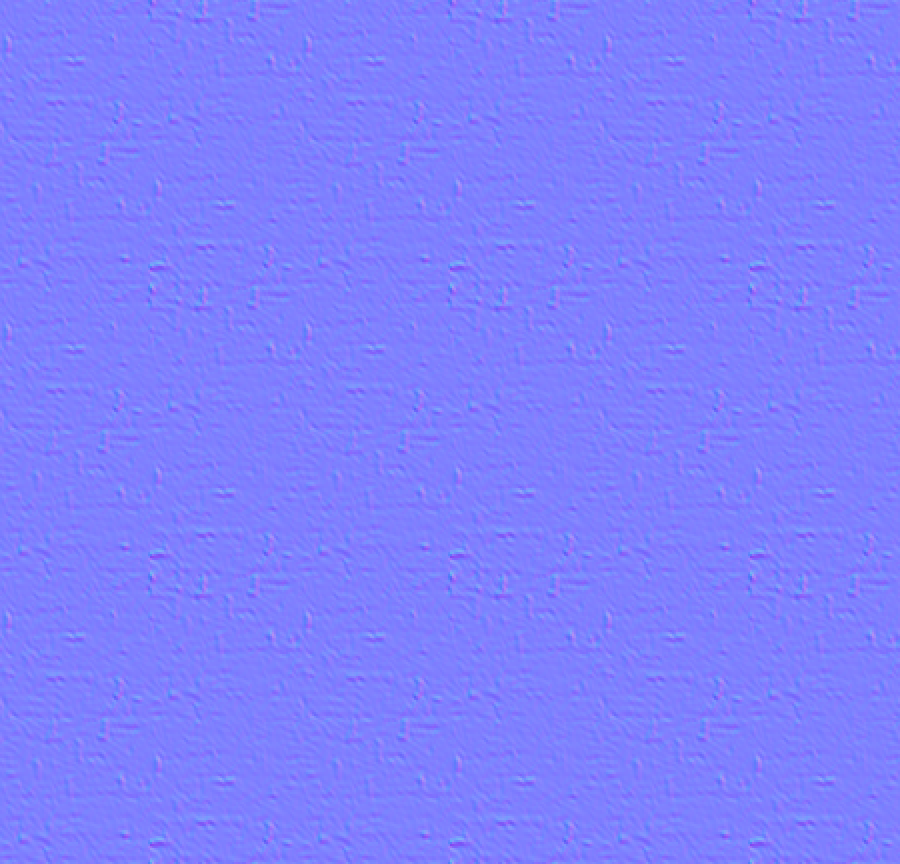
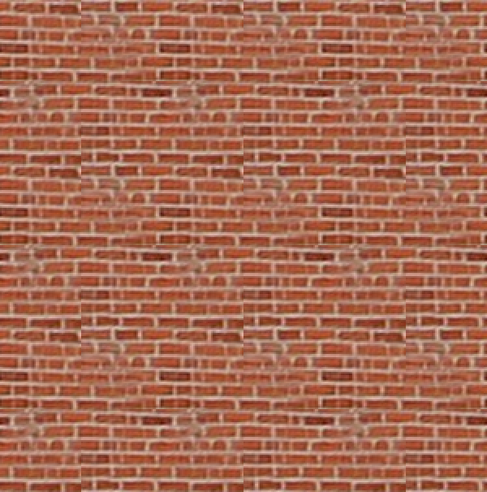
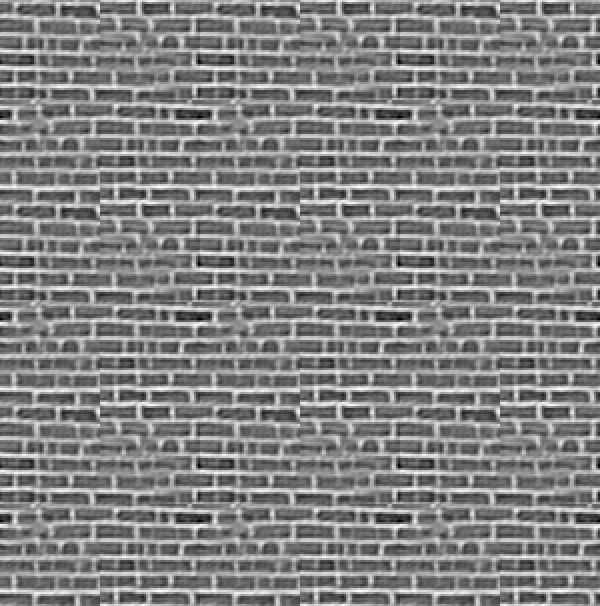
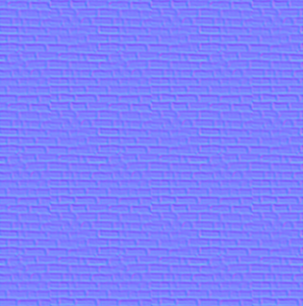

Materials
Asks What Griffintown’s walls are made of, recorded as measurements and as texture maps, each tied to a building and a photo.
Found The wall material of 215 of the 296 buildings, read from street photos: red brick on 76, more than any other. Two library entries, both red brick factory walls with courses of 8.2 and 8.4 cm. One greystone attempt was set aside.
Stands partial. Each wall reading is an assumption, tied to its photo and not yet checked by a second reader. In the entries, the colour map is observed and the height and normal maps are estimated.
Leaves out Murals and graffiti, interiors, and anything no published photo shows clearly.
In the game Not yet. The greybox look comes first (G1 World).
Trace entry file entry.json · uses S4 outlines and G1 heights
What this page holds
The materials library I use in this project, and where each material came from. It documents Griffintown’s architectural character for this research; the maps are not offered for others to use. Each entry starts from facts about the wall: where it is, which building, how big its bricks or stones are, and how that was measured. The texture maps come second, and each says how it was made. The Lab has a Materials tab that shows each recorded wall in its measured colour. A building’s panel lists its entries there, and on the other tabs too when you choose.
How an entry is made
- Find a photo. I search Wikimedia Commons, where every file carries an open licence and an author. I keep photos that face a wall squarely and are sharp enough to show its courses.
- Tie it to a building. The photo’s place and the building’s address lead to its S4 outline.
- Straighten the wall. I mark the four corners of one face. The face’s width comes from the S4 outline and its height from the 2023 lidar in G1. The photo is then warped so the face stands flat, at a known number of pixels per metre.
- Measure. The repeat of the brick rows gives the height of one course (one brick and its joint).
- Make the maps. A square of plain wall is cut from the straightened face and made to repeat without seams.
| Map | Status | How |
|---|---|---|
| colour | observed | the photo’s colour, with light that changes slowly across the wall divided out |
| height | assumption | estimated: brighter read as higher, the usual rule of one-photo tools. Nothing was measured. |
| normal | assumption | worked out from the estimated height, with an assumed relief of 1 cm |
| roughness | not made | one daylight photo shows no reflection to measure it |
A measured height would need several photos of the same patch from different places (photogrammetry). The published photos found so far give one view each.
Every building’s walls
For each S4 building I took the nearest street panorama on Mapillary taken since 2023, within 40 m of its outline, and cut the 90° view facing it. Each view was read by eye for one thing: what the wall is made of. The reading was done blind to the building’s use and age, and marked clear or likely. A photo taken before the year the tax roll gives a building is not used, since it shows what stood there before.
| Wall material | Buildings | built before 1950 | 1950 to 1999 | 2000 on | year unknown |
|---|---|---|---|---|---|
| brick, red | 76 | 24 | 6 | 20 | 26 |
| concrete or render | 29 | 8 | 8 | 3 | 10 |
| brick, buff or cream | 24 | 6 | 3 | 6 | 9 |
| brick, dark | 22 | 5 | 0 | 8 | 9 |
| brick, brown | 14 | 6 | 0 | 1 | 7 |
| stone, dressed | 14 | 8 | 1 | 1 | 4 |
| panels | 13 | 0 | 0 | 6 | 7 |
| metal cladding | 7 | 1 | 3 | 1 | 2 |
| glass | 6 | 1 | 1 | 2 | 2 |
| under construction | 4 | 1 | 1 | 0 | 2 |
| stone, rough-faced | 4 | 2 | 1 | 0 | 1 |
| siding | 2 | 2 | 0 | 0 | 0 |
| not read | 81 |
121 readings are marked clear and 94 likely. 74 views did not show the building’s own wall: a neighbour, a tree, a truck, or a corner where two walls meet. 4 buildings had no panorama within 40 m, and in 3 cases the photo predates the building.
Red brick is the most common wall on buildings from before 1950 (24) and from 2000 on (20). From 1950 to 1999, concrete or render leads (8, against 6 in red brick). Among buildings with a known year, panels appear only on those from 2000 on. Dressed stone stands mostly on buildings from before 1950 (8 of 14).
Each reading rests on one view, cut toward the nearest point of the outline, so a long building is read from one place. No second reader has checked them yet. In the Lab, the Materials tab colours every building by its reading, and each building’s panel links to the photo.
The 2016 textured 3D model, set aside. The city’s 2016 model comes with wall textures (CC BY 4.0), made from oblique aerial photos. Measured building by building, most of what its wall surfaces show is roof, street or shade: walls are thin slivers in photos taken from the air. The median colour came out grey for buildings that are red brick in street photos. It gives no wall colour I can use.
M001 · red brick, 1895 factory wall
Where Lowney (Phase 1), 350 rue de l’Inspecteur: the face on the street (S4 building w54895065; 5 storeys; built 1895 according to the city’s tax roll).


| Measured | Value | How sure |
|---|---|---|
| one brick course | 8.2 cm (12.2 per metre) | 8.0 to 8.4 cm: the face’s height is known to about 0.6 m |
| same course in three patches | 8.20 to 8.37 cm | verified |
| mean colour | #99655b | that afternoon’s light; the camera’s white balance is unknown |
| detail | 1.25 pixels per cm | a 1 cm joint is one pixel wide |
A check on the scale. In the straightened face the window sills lie 3.54, 3.56 and 3.69 m apart. S4 measures one storey at 3.55 m across the area. The width came from the outline and the height from the lidar, and they agree.
What it cannot show. At this detail the bond pattern and the length of a brick cannot be read. The light lines are repointed joints, a later repair; most joints read darker than the brick.



One tile is 1.2 m wide and 14 courses tall (1.15 m), 150 × 144 pixels: the photo holds no more. A whole, even number of courses lets the rows meet across the seams. The tile was cut where the wall has the fewest repairs and stains, so one patch does not repeat across every tile.
Source Photo by Jeangagnon, Wikimedia Commons, CC BY-SA 4.0. The maps stay in my project files. The previews on this page are adapted from that photo and shown under the same licence, with this credit. Record: entry.json.
M002 · red brick, 1880s factory wall
Where Robin & Sadler, 1845 rue William, at rue des Seigneurs: the face on William (S4 building w225610882, built 1880 according to the tax roll).

_(36204300985).jpg){kind=link}
| Measured | Value | How sure |
|---|---|---|
| one brick course | 8.4 cm (11.9 per metre) | 7.9 to 8.9 cm: the face’s height is known to about 1 m |
| same course in three patches | 8.29 to 8.41 cm | verified; a fourth patch showed no clear repeat and was left out |
| mean colour | #af6851 | overcast light, fewer shadows than M001; white balance unknown |
| detail | about 1 pixel per cm | joints one or two pixels wide |
A check on the scale. The sills lie 4.1 and 4.4 m apart. S4 measures one storey at 4.27 m for commercial buildings. The photo shows four rows of windows; the tax roll gives 5 storeys.



One tile is 1.0 m wide and 12 courses tall, 100 × 101 pixels, cut from the pier between the second and third bays.
Source Photo by Parcours riverain, Ville de Montréal, Wikimedia Commons, CC BY 2.0. The maps stay in my project files; the previews here are shown with this credit. Record: entry.json.
Set aside
M003 · greystone, rock-faced (the stone base under M001). The straightened tile showed no stone joints or relief. The base holds two or three courses, and a parked car hides its middle, so the tile read as plain grey render. A closer photo of rock-faced greystone is needed. Its record stays in my project files.
Photos waiting for entries
Wikimedia Commons’ category Griffintown (Montreal) and its subcategories, three levels deep, hold 420 files (searched 20 November 2026). All carry an open licence or are in the public domain. I looked at the 285 taken from 2005 on, inside the study area or without a location, and sorted those showing a wall clearly enough (51 photos; two are now entries):
| Material | Photos |
|---|---|
| red brick, 19th and early 20th century | 13 |
| greystone, dressed | 13 |
| painted concrete or render | 7 |
| contemporary brick veneer | 5 |
| rubble stone | 4 |
| contemporary panels | 4 |
| buff and brown brick | 3 |
| greystone, rock-faced | 2 |
Murals and graffiti are left out of this list.